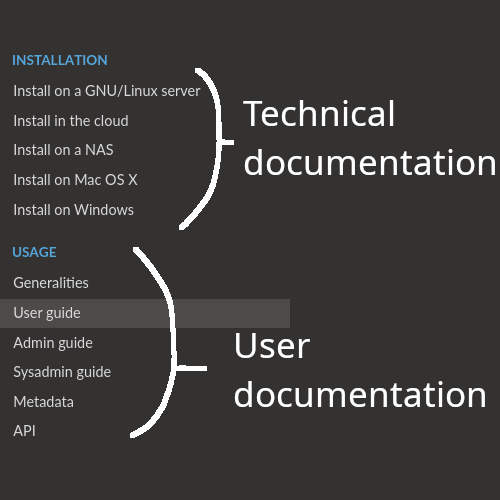

Welcome to the documentation for eLabFTW!
- Website:
- Live demo:
How to use this site
This website contains both the technical documentation for installation, configuration and maintenance of the application, and the user documentation. Look at the menu on the left and select where you want to go:
Introduction
eLabFTW is a web application, running in a linux container and using a MySQL database to store data persistently. Once installed on a server, users can register an account and start using their electronic lab notebook.
Several teams can be hosted on the same install. Ideally, it is installed at the institution/company level. But individual teams can install it for themselves, too. Or you can run it locally on your computer, though this is not advised.
It is distributed through Docker images, ensuring portability and added security through containerization. See the Docker documentation for more information about the containerization technology.
If you’re looking into what eLabFTW can do before installing it, you might be interested in the list of features.
Start the installation
See this page to install it on your server.
See this page if you don’t have access to a server already.
Join the chat room if you want to ask a question or require help.

Installation
- Install on a GNU/Linux server
- Install in the cloud
- Install on a NAS
- Install on Mac or Windows
Usage
- Generalities
- User guide
- Admin guide
- Sysadmin guide
- Import / Export
- Metadata
- API
Documentation
- How to backup
- How to update
- Contributing
- What can you do to help this project?
- Non-code contributions
- Reporting a security issue
- Translating
- Contributing to the code
- Working with JavaScript
- Miscellaneous
- Glossary
- Build
- Tests
- Exceptions handling
- Making a pull request
- Adding a lang
- Adding a new term for js i18n
- Accessing Docker MySQL database with phpmyadmin
- Using a trusted certificate for local dev
- How to test external auth
- How to test ldap
- Install a pre-commit hook
- Frequently asked questions
- But how is it better than something I can buy?
- What about patents and intellectual property?
- Why use eLabFTW?
- Is this system stable? Can I trust my data with it?
- Who else is using it?
- Is the data encrypted?
- Is eLabFTW still maintained?
- Will I be able to import my plasmids/antibodies/whatever in the database from a Excel file?
- Can I try it before I install it?
- What are the technical requirements?
- What about data retention/traceability
- Is it compliant to 21CFR Part 11?
- What about compliance to standards?
- How to change the team of a user?
- Is there a plugin system?
- Is it totally free?
- What is the meaning of ‘FTW’?
- Features
- About Docker
- Upgrade a normal install to a Docker install
- Configure LDAP authentication
- Introduction
- How does eLabFTW query LDAP servers?
- Sysadmin LDAP settings
- Toggle LDAP login
- LDAP Scheme
- LDAP Host
- LDAP Port
- LDAP Base DN
- LDAP Username
- LDAP Password
- Use TLS
- By which LDAP attribute the user will be found
- What attribute to look for the team name
- Create team sent by server if it doesn’t exist already
- If no team attribute is found, to which team user is assigned?
- What attribute to look for …
- Using a custom cert file
- Configure SAML2 authentication
- Debug
Miscellaneous
- Acknowledgements
- Changelog
- Version 5.1.15
- Version 5.1.14
- Version 5.1.13
- Version 5.1.12
- Version 5.1.11
- Version 5.1.10
- Version 5.1.9
- Version 5.1.8
- Version 5.1.7
- Version 5.1.6
- Version 5.1.5
- Version 5.1.4
- Version 5.1.3
- Version 5.1.2
- Version 5.1.1
- Version 5.1.0
- Version 5.0.4
- Version 5.0.3
- Version 5.0.2
- Version 5.0.1
- Version 5.0.0
- Version 4.9.0
- Version 4.8.6
- Version 4.8.5
- Version 4.8.4
- Version 4.8.3
- Version 4.8.2
- Version 4.8.1
- Version 4.8.0
- Version 4.7.0
- Version 4.6.1
- Version 4.6.0
- Version 4.5.14
- Version 4.5.13
- Version 4.5.12
- Version 4.5.11
- Version 4.5.10
- Version 4.5.9
- Version 4.5.8
- Version 4.5.7
- Version 4.5.6
- Version 4.5.5
- Version 4.5.4
- Version 4.5.3
- Version 4.5.2
- Version 4.5.1
- Version 4.5.0
- Version 4.4.3
- Version 4.4.2
- Version 4.4.1
- Version 4.4.0
- Version 4.3.10
- Version 4.3.9
- Version 4.3.8
- Version 4.3.7
- Version 4.3.6
- Version 4.3.5
- Version 4.3.4
- Version 4.3.3
- Version 4.3.2
- Version 4.3.1
- Version 4.3.0
- Version 4.2.4
- Version 4.2.3
- Version 4.2.2
- Version 4.2.1
- Version 4.2.0
- Version 4.1.0
- Version 4.0.11
- Version 4.0.10
- Version 4.0.9
- Version 4.0.8
- Version 4.0.7
- Version 4.0.6
- Version 4.0.5
- Version 4.0.4
- Version 4.0.3
- Version 4.0.2
- Version 4.0.1
- Version 4.0.0
- Version 3.6.7
- Version 3.6.6
- Version 3.6.5
- Version 3.6.4
- Version 3.6.3
- Version 3.6.2
- Version 3.6.1
- Version 3.6.0
- Version 3.5.6
- Version 3.5.5
- Version 3.5.4
- Version 3.5.3
- Version 3.5.2
- Version 3.5.1
- Version 3.5.0
- Version 3.4.17
- Version 3.4.16
- Version 3.4.15
- Version 3.4.14
- Version 3.4.13
- Version 3.4.12
- Version 3.4.11
- Version 3.4.10
- Version 3.4.9
- Version 3.4.8
- Version 3.4.7
- Version 3.4.6
- Version 3.4.5
- Version 3.4.4
- Version 3.4.3
- Version 3.4.2
- Version 3.4.1
- Version 3.4.0
- Version 3.3.12
- Version 3.3.11
- Version 3.3.10
- Version 3.3.9
- Version 3.3.8
- Version 3.3.7
- Version 3.3.6
- Version 3.3.5
- Version 3.3.4
- Version 3.3.3
- Version 3.3.2
- Version 3.3.1
- Version 3.3.0
- Version 3.2.2
- Version 3.2.1
- Version 3.2.0
- Version 3.1.2
- Version 3.1.1
- Version 3.1.0
- Version 3.0.3
- Version 3.0.2
- Version 3.0.1
- Version 3.0.0
- Version 2.0.7
- Version 2.0.6
- Version 2.0.5
- Version 2.0.4
- Version 2.0.3
- Version 2.0.2
- Version 2.0.1
- Version 2.0.0
- Version 1.8.5
- Version 1.8.4
- Version 1.8.3
- Version 1.8.2
- Version 1.8.1
- Version 1.8.0
- Version 1.7.8
- Version 1.7.7
- Version 1.7.6
- Version 1.7.5
- Version 1.7.4
- Version 1.7.3
- Version 1.7.2
- Version 1.7.1
- Version 1.7.0
- Version 1.6.2
- Version 1.6.1
- Version 1.6.0
- Version 1.5.7
- Version 1.5.6
- Version 1.5.5
- Version 1.5.4
- Version 1.5.3
- Version 1.5.2
- Version 1.5.1
- Version 1.5.0
- Version 1.4.3
- Version 1.4.2
- Version 1.4.1
- Version 1.4.0
- Version 1.3.1
- Version 1.3.0
- Version 1.2.6
- Version 1.2.5
- Version 1.2.4
- Version 1.2.3
- Version 1.2.2
- Version 1.2.1
- Version 1.2.0-p3
- Version 1.2.0-p2
- Version 1.2.0-p1
- Version 1.2.0
- Version 1.1.8-p2
- Version 1.1.8-p1
- Version 1.1.8
- Version 1.1.7
- Version 1.1.6
- Version 1.1.5-p2
- Version 1.1.5-p1
- Version 1.1.5
- Version 1.1.4-p3
- Version 1.1.4-p2
- Version 1.1.4-p1
- Version 1.1.4
- Version 1.1.3
- Version 1.1.2-p1
- Version 1.1.2
- Version 1.1.1
- Version 1.1.0
- Version 1.0.0
- Version 1.0.0-beta
- Version 1.0.0-alpha
- Version 0.12.6
- Version 0.12.5
- Version 0.12.4
- Version 0.12.0
- Version 0.11.0
- Version 0.10.2
- Version 0.10.1
- Version 0.10.0
- Version 0.9.5
- Version 0.9.4.2
- Version 0.9.4.1
- Version 0.9.4
- Version 0.9.3
- Version 0.9.2
- Version 0.9.1
- Version 0.9
- Version 0.8.2
- Version 0.8.1
- Version 0.8
- Version 0.7.3.2
- Version 0.7
- Version 0.6
- Version 0.5.8 and 0.5.9
- Version 0.5.7
- Version 0.5.6
- Version 0.5.5
- Version 0.5.4
- Version 0.5.3
- Version 0.5.2
- Version 0.5.1
- Version 0.5
- Version 0.4
- Version 0.3
- Version 0.2
- Version 0.1